The assignment asks for a complete foundation design for a students’ hostel on a level terrace in Mandi district: subsurface characterisation, derivation of design parameters, bearing capacity to IS 6403:1981, stress distribution and settlement to IS 8009 and IS 1904:1986, and a recommendation — including an alternative foundation wherever isolated footings fail. The site lies in seismic zone V and close to a stream, which brings liquefaction and the seasonal rise of groundwater into the design.
The work was carried out with GeoFound, a web application built by the group for this project, in which every equation is traced from input to result with its source. Two independent implementations of the core modules (an earlier JavaScript platform and the TypeScript engine of GeoFound) were run against each other, and the key results were checked by hand. This report presents the data, methods, results and the design decision; the application, its tests and the hand calculations are in the project repository.
The building footprint is 30 m × 15 m on a 5 m × 5 m grid with lines 1–7 (west to east) and A–D. Unfactored service loads (dead + live) at founding level were multiplied by λ = 1 + g/100 = 1.08 (Table 1). Isolated square footings at a minimum founding depth Df = 1.5 m were the starting proposal, with a rectangular footing for the eccentric column C4. Columns were zoned to the nearest borehole: BH-2 for lines 1–2, BH-1 for lines 3–5 and BH-3 for lines 6–7 (Figure 1).
Table 1. Column loads at founding level (λ = 1.08).
| Column type | Grid positions | No. | P (service), kN | P × λ, kN | M × λ, kN·m |
|---|---|---|---|---|---|
| Corner | A1, A7, D1, D7 | 4 | 650 | 702 | 0 |
| Edge | A2–A6, D2–D6, B1, C1, B7, C7 | 14 | 1000 | 1080 | 0 |
| Interior | B2–B6, C2, C3, C5, C6 | 9 | 1450 | 1566 | 0 |
| Eccentric interior* | C4 | 1 | 1450 | 1566 | 391.5 |
* The P and M of C4 were not given in the brief; the values shown (interior load, eccentricity 0.25 m) are assumed and are inputs in GeoFound.
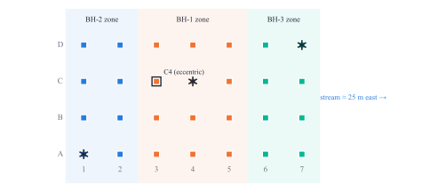
Three 150 mm boreholes were advanced to 15 m in October 2026 with SPT at 1.5 m intervals (IS 2131:1981) and undisturbed samples in the clay. Monthly piezometer readings give the seasonal range of the water table (Table 2). The profile (Figure 2, Table 3) is: fill (0.5–0.9 m); silty fine to medium sand SM; poorly graded sand with gravel SP; soft to firm silty clay CI (BH-1 5.8–10.6 m, BH-2 7.6–9.6 m, BH-3 4.4–11.2 m); and very dense sandy gravel GW with cobbles and boulders. The clay thickens and the sands loosen towards BH-3, nearest the stream.
Table 2. Boreholes and water tables (m below ground level).
| Borehole | Location | GL, m RL | WT Oct (24 h), m | WT Aug (high), m | WT May (low), m |
|---|---|---|---|---|---|
| BH-1 | near C4, centre | 100.00 | 2.6 | 1.0 | 3.6 |
| BH-2 | near A1, west | 100.20 | 3.2 | 1.7 | 4.2 |
| BH-3 | near D7, east (25 m from stream) | 99.70 | 1.9 | 0.6 | 3.0 |
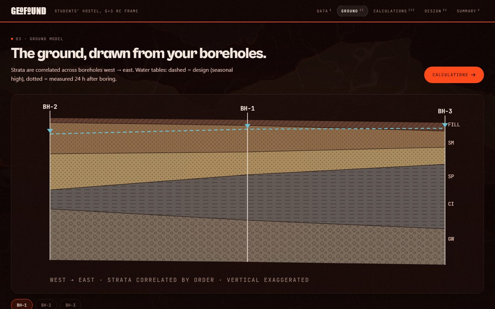
Table 3. Design soil profile adopted for each borehole.
| BH | Depth, m | Soil | γ moist / sat, kN/m³ | Strength (design) | Stiffness / compressibility |
|---|---|---|---|---|---|
| BH-1 | 0.0–0.6 | FILL | 16.5 / 18.5 | φ′ = 28.0° | E = 8.0 MPa |
| BH-1 | 0.6–3.4 | SM | 18.0 / 20.0 | φ′ = 30.0° | E = 14.8 MPa |
| BH-1 | 3.4–5.8 | SP | 19.0 / 20.4 | φ′ = 34.4° | E = 19.5 MPa |
| BH-1 | 5.8–10.6 | CI | – / 18.6 | cu = 28.5 kPa | Cc 0.292, Cr 0.038, e0 0.918, σ′p 115 |
| BH-1 | 10.6–15.0 | GW | – / 21.5 | φ′ = 40.0° | E = 60.0 MPa |
| BH-2 | 0.0–0.5 | FILL | 16.5 / 18.5 | φ′ = 28.0° | E = 8.0 MPa |
| BH-2 | 0.5–3.8 | SM | 18.2 / 20.0 | φ′ = 30.0° | E = 15.2 MPa |
| BH-2 | 3.8–7.6 | SP | 19.3 / 20.6 | φ′ = 34.4° | E = 22.5 MPa |
| BH-2 | 7.6–9.6 | CI | – / 18.7 | cu = 36.1 kPa | Cc 0.288, Cr 0.038, e0 0.891, NC |
| BH-2 | 9.6–15.0 | GW | – / 21.5 | φ′ = 40.0° | E = 60.0 MPa |
| BH-3 | 0.0–0.9 | FILL | 16.0 / 18.0 | φ′ = 26.0° | E = 6.0 MPa |
| BH-3 | 0.9–2.6 | SM | 17.5 / 19.5 | φ′ = 28.0° | E = 10.5 MPa |
| BH-3 | 2.6–4.4 | SP | 18.6 / 20.0 | φ′ = 32.0° | E = 14.5 MPa |
| BH-3 | 4.4–11.2 | CI | – / 18.5 | cu = 28.5 kPa | Cc 0.315, Cr 0.038, e0 0.945, NC |
| BH-3 | 11.2–15.0 | GW | – / 21.5 | φ′ = 40.0° | E = 60.0 MPa |
Two different water tables are used, each where it is physically correct. The design (seasonal highest, August) table gives the lowest effective stress and is used for bearing capacity (surcharge and W′), Schmertmann settlement and the cyclic stress ratio. The measured table (24 h after boring, October) describes the stress state when the SPT was performed and the samples were taken; it is used for the IS 2131 corrections, for (N1)60, and for σ′v0 and OCR of the clay, since σ′p was measured on those samples.
For cohesionless layers the overburden correction and, for fine or silty sand below the water table, the dilatancy correction are applied; clay N-values are not corrected. The N = 22 at 9.0 m in BH-1 (sampler struck a cobble) is reported but not used to characterise the clay; refusals (> 100 blows) are reported as such.
c′ and φ′ were obtained by ordinary least squares on the direct-shear results, τf = c′ + σn tan φ′. For the non-plastic sands the small intercept is a fitting artefact and design c′ = 0 is adopted. The undrained strength is cu = (σ1 − σ3)f/2, averaged over the three cell pressures. Oedometer pressures were converted from kg/cm² to kPa (× 98.0665); Cc is the slope of the virgin line, Cr the slope of the unloading branch, and σ′p follows Casagrande’s construction. cv was converted from cm²/s to m²/yr (× 3155.76) and taken for the load increment that brackets the field stress range. For the disturbed BH-3 clay, Cc = 0.009(LL − 10) (Skempton, 1944) and e0 = wGs are used, and the clay is taken as normally consolidated.
with F = 3. Strength is averaged over the shear zone Df to Df + B. Local shear uses cm = ⅔c and φm = tan⁻¹(⅔ tan φ); for 29° < φ < 36° the factors are interpolated linearly between local and general shear. q is the effective overburden at founding level; W′ = 0.5 when the water table is at or above the base. For an eccentric load the effective dimensions B′ = B − 2eB, L′ = L − 2eL (Meyerhof, 1953) are used, with shape factors from B′/L′. The applied net pressure is qn = (P + Wf)/A′ − σv0(Df), with Wf the weight of footing and backfill (20 kN/m³).
Δσz below the centre and corner of a rectangle is computed from Newmark’s (1935) integration of the Boussinesq solution, the centre value by superposition of four corner rectangles; the 2:1 method gives
Stress from neighbouring footings is added by superposition of signed rectangles with the column offsets.
Immediate settlement of the granular layers follows Schmertmann et al. (1978):
with E = 500(N + 15) kPa (Bowles, 1996). Consolidation of the clay is summed over sublayers no thicker than 0.5 m:
(the first term alone with σ′0 + Δσ in place of σ′p when the final stress stays below σ′p; the second alone for NC clay). The time rate uses Terzaghi’s solution U(Tv), Tv = cvt/Hd². The BH-1 clay lies between sand and gravel, so it drains at both faces (Hd = 4.8/2 = 2.4 m).
following Youd et al. (2001). Zone V gives Z = 0.36; amax = Z/2 = 0.18 g is adopted for the design earthquake, and amax = Z = 0.36 g is reported as an upper bound; Mw = 7.5 (MSF = 1). CE = 1.0, CB = 1.05 (150 mm hole), and CR from the rod length. Clays with PI ≥ 12 % are not susceptible (Bray & Sancio, 2006).
with K = 1.5, δ = φ, α = 1.0, and PD limited at a critical depth of 20D from ground level. Shaft friction in liquefiable layers is ignored and added to the pile load as downdrag. Pile loads in a group follow the rigid-cap distribution Pi = P/n ± M xi/Σx², with at least two piles per column at 3D spacing. Pile settlement is D/100 plus elastic shortening with Ec = 5000√fck (M30, severe exposure to IS 456:2000), multiplied by the group factor √(Bg/D) (Vesic, 1969).
Bearing: qn ≤ qns with F = 3. Settlement (IS 1904:1986, RC frame on isolated foundations, sand): total ≤ 50 mm, differential ≤ 0.0015 L (7.5 mm on a 5 m span), angular distortion ≤ 1/666. The sand row is adopted because the founding strata are sands and it is the stricter of the two rows. Footings must fit the grid with a 0.3 m clear gap (B ≤ 4.7 m).
Table 4. SPT corrections (σ′v at the October water table; clay not corrected).
| BH | z, m | N | σ′v (Oct WT), kPa | CN | N′ | N″ | Note |
|---|---|---|---|---|---|---|---|
| BH-2 | 1.5 | 14 | 26.4 | 1.447 | 20.3 | 20.3 | |
| BH-2 | 3.0 | 17 | 53.8 | 1.209 | 20.6 | 20.6 | |
| BH-2 | 4.5 | 26 | 71.1 | 1.116 | 29.0 | 29.0 | |
| BH-2 | 6.0 | 31 | 87.2 | 1.047 | 32.5 | 32.5 | |
| BH-2 | 7.5 | 34 | 103.4 | 0.991 | 33.7 | 33.7 | |
| BH-2 | 9.0 | 9 | 117.0 | 1.000 | 9.0 | 9.0 | |
| BH-2 | 10.5 | >100 | 132.8 | 0.907 | – | – | refusal (>100) |
| BH-2 | 12.0 | >100 | 150.3 | 0.865 | – | – | refusal (>100) |
| BH-1 | 1.5 | 13 | 26.1 | 1.451 | 18.9 | 18.9 | |
| BH-1 | 3.0 | 16 | 50.0 | 1.234 | 19.7 | 17.4 | dilatancy |
| BH-1 | 4.5 | 24 | 65.7 | 1.142 | 27.4 | 27.4 | |
| BH-1 | 6.0 | 6 | 81.2 | 1.000 | 6.0 | 6.0 | |
| BH-1 | 7.5 | 5 | 94.4 | 1.000 | 5.0 | 5.0 | |
| BH-1 | 9.0 | 22 | 107.6 | 1.000 | 22.0 | 22.0 | cobble — not used for clay |
| BH-1 | 10.5 | 8 | 120.8 | 1.000 | 8.0 | 8.0 | |
| BH-1 | 12.0 | >100 | 138.0 | 0.894 | – | – | refusal (>100) |
| BH-1 | 13.5 | >100 | 155.6 | 0.854 | – | – | refusal (>100) |
| BH-3 | 1.5 | 6 | 24.9 | 1.465 | 8.8 | 8.8 | |
| BH-3 | 3.0 | 14 | 42.8 | 1.286 | 18.0 | 18.0 | |
| BH-3 | 4.5 | 4 | 57.9 | 1.000 | 4.0 | 4.0 | |
| BH-3 | 6.0 | 4 | 70.9 | 1.000 | 4.0 | 4.0 | |
| BH-3 | 7.5 | 5 | 84.0 | 1.000 | 5.0 | 5.0 | |
| BH-3 | 9.0 | 6 | 97.0 | 1.000 | 6.0 | 6.0 | |
| BH-3 | 10.5 | 8 | 110.0 | 1.000 | 8.0 | 8.0 | |
| BH-3 | 12.0 | >100 | 125.5 | 0.926 | – | – | refusal (>100) |
| BH-3 | 13.5 | >100 | 143.0 | 0.882 | – | – | refusal (>100) |
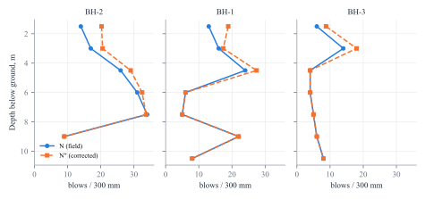
Table 5. Laboratory results and design parameters.
| Test | Result | Design value |
|---|---|---|
| Direct shear, SM soaked (OLS) | c′ = 1.03 kPa, φ′ = 29.98° | c′ = 0, φ′ = 30.0° |
| Direct shear, SP soaked (OLS) | c′ = 0.37 kPa, φ′ = 34.41° | c′ = 0, φ′ = 34.4° |
| UU triaxial, UDS-1 (7.0–7.45 m) | deviator 57.2 / 55.8 / 58.1 kPa | cu = 28.5 kPa |
| UU triaxial, UDS-2 (9.5–9.95 m) | deviator 71.0 / 73.4 / 72.2 kPa | cu = 36.1 kPa |
| Oedometer UDS-1 (kg/cm² × 98.0665) | Cc = 0.292, Cr = 0.038 | σ′p = 114.6 kPa |
| σ′v0 at UDS-1 (7.225 m), Oct WT | 92.0 kPa (Aug WT 79.5, May WT 99.9) | OCR = 1.25 |
| cv, 1–2 kg/cm² increment | 6.3 × 10⁻⁴ cm²/s × 3155.76 | cv = 1.99 m²/yr |
| BH-3 clay (no oedometer) | Cc = 0.009(LL − 10), LL = 45 % | Cc = 0.315, e0 = wGs = 0.945, NC |
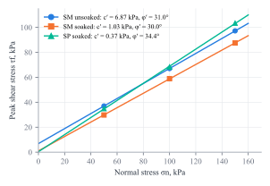
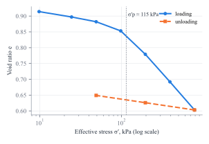
The SM loses about 1° of friction angle and most of its apparent cohesion on soaking (unsoaked φ′ = 31.0°), so the soaked values are used. At UDS-1, σ′v0 = 92.0 kPa at the October water table and 99.9 kPa at the May low; the measured σ′p = 114.6 kPa is consistent with the clay having been pre-loaded by the annual lowering of the water table, so it is lightly over-consolidated (OCR ≈ 1.25). Under load the clay works at about 90–160 kPa, which is the 1–2 kg/cm² increment; cv = 1.99 m²/yr from that increment is therefore representative.
Table 6 gives the smallest footing that passes bearing (F = 3) and settlement when each footing is considered alone. For B3 (BH-1, B = 3.0 m), the shear zone 1.5–4.5 m contains 1.9 m of SM and 1.1 m of SP, so φavg = (1.9 × 30.0 + 1.1 × 34.4)/3.0 = 31.6°; the factors are interpolated (t = 0.37) to Nc = 23.61, Nq = 13.31, Nγ = 15.28; with q = 22.20 kPa, sq = 1.2, sγ = 0.8, dq = dγ = 1.080 and W′ = 0.5, the surcharge and self-weight terms are 354.0 and 181.8 kPa, so qnu = 535.8 kPa and qns = 178.6 kPa against an applied qn = 176.9 kPa. In the BH-3 zone even a 6 m footing fails: its shear zone (1.5–7.5 m) is dominated by the loose SM and the soft clay, the mode is local shear and qns is only 19.3 kPa, and the 6.8 m of soft clay would settle 91.4 mm.
Table 6. Isolated-footing trial (footing analysed alone).
| Col. | Zone | P, kN | B (× L), m | Shear mode | Nc / Nq / Nγ | W′ | qnu, kPa | qns, kPa | qn, kPa | si + sc (alone), mm | Alone |
|---|---|---|---|---|---|---|---|---|---|---|---|
| A1 | BH-2 | 702 | 2.40 | interpolated | 18.43 / 9.13 / 9.13 | 0.54 | 377.1 | 125.7 | 125.4 | 11.0 + 7.6 | pass |
| B2 | BH-2 | 1566 | 3.05 | interpolated | 21.53 / 11.60 / 12.72 | 0.53 | 526.8 | 175.6 | 171.9 | 19.3 + 15.8 | pass |
| A3 | BH-1 | 1080 | 2.70 | interpolated | 22.37 / 12.29 / 13.75 | 0.50 | 474.7 | 158.2 | 151.0 | 15.5 + 9.5 | pass |
| B3 | BH-1 | 1566 | 3.00 | interpolated | 23.61 / 13.31 / 15.28 | 0.50 | 535.8 | 178.6 | 176.9 | 19.4 + 15.2 | pass |
| C4 | BH-1 | 1566 | 2.85 × 4.28 | interpolated | 23.01 / 12.82 / 14.54 | 0.50 | 470.7 | 156.9 | 152.2 | 16.2 + 18.8 | pass |
| B6 | BH-3 | 1566 | 6.00 | local | 8.32 / 2.46 / 1.21 | 0.50 | 58.0 | 19.3 | 46.8 | 2.9 + 91.4 | fail |
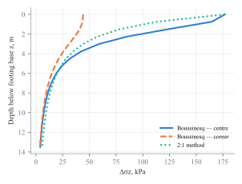
Table 7. Stress increase below B3.
| z below base, m | Δσz centre, kPa | Δσz corner, kPa | Δσz 2:1, kPa |
|---|---|---|---|
| 0.00 | 176.9 | 44.2 | 176.9 |
| 1.50 | 124.0 | 41.1 | 78.6 |
| 3.00 | 59.5 | 31.0 | 44.2 |
| 4.50 | 31.7 | 21.4 | 28.3 |
| 6.00 | 19.1 | 14.9 | 19.7 |
| 7.50 | 12.7 | 10.7 | 14.4 |
| 9.00 | 9.0 | 7.9 | 11.1 |
| 10.50 | 6.7 | 6.1 | 8.7 |
| 12.00 | 5.1 | 4.8 | 7.1 |
| 13.50 | 4.1 | 3.9 | 5.8 |
The 2:1 method underestimates the Boussinesq centre stress near the footing (by 37 % at z = 0.5B and 26 % at z = B), agrees within about 10 % between z = 1.5B and 2B, and is slightly higher below that. The corner stress tends to q/4 at shallow depth, as expected from superposition.
Analysed alone, B3 settles 19.4 mm in the sands (Schmertmann) and 15.2 mm in the clay. On a 5 m grid, however, the pressure bulbs of the neighbouring footings overlap at the depth of the clay (5.8–10.6 m). Superposing the stress of the 19 neighbouring footings within 15 m raises Δσ in the clay from 9–31 kPa (footing alone) to 45–60 kPa (Figure 7), which takes the clay past σ′p into virgin compression; consolidation of B3 rises to 94.4 mm (Table 8). With footings proportioned for equal settlement, the best layout still reaches 114 mm, with δ = 50.7 mm between C2–C3 — beyond the 50 mm and 7.5 mm limits. Isolated footings are therefore not acceptable anywhere on the site.
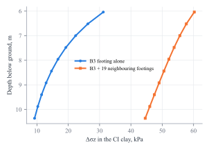
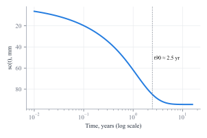
Table 8. Consolidation of the BH-1 clay below B3 (selected 0.5 m sublayers; October water table).
| z mid, m | σ′v0, kPa | Δσ alone | Δσ group | σ′p, kPa | state (group) | s alone, mm | s group, mm |
|---|---|---|---|---|---|---|---|
| 6.04 | 81.6 | 31.2 | 60.2 | 114.6 | OC-crossing | 1.34 | 8.19 |
| 7.00 | 90.0 | 22.4 | 55.6 | 114.6 | OC-crossing | 0.92 | 8.63 |
| 7.96 | 98.5 | 16.7 | 52.1 | 114.6 | OC-crossing | 0.80 | 9.32 |
| 8.92 | 106.9 | 12.9 | 49.0 | 114.6 | OC-crossing | 1.71 | 10.08 |
| 9.88 | 115.3 | 10.3 | 46.0 | 115.3 | NC | 2.71 | 10.67 |
Table 9. Time–settlement of B3 (cv = 1.99 m²/yr, Hd = 2.4 m).
| t, yr | Tv | U, % | sc(t), mm |
|---|---|---|---|
| 0.05 | 0.017 | 14.8 | 14.0 |
| 0.10 | 0.035 | 21.0 | 19.8 |
| 0.25 | 0.086 | 33.1 | 31.3 |
| 0.50 | 0.173 | 46.9 | 44.2 |
| 1.00 | 0.345 | 65.4 | 61.8 |
| 2.00 | 0.690 | 85.2 | 80.5 |
| 3.00 | 1.035 | 93.7 | 88.5 |
| 5.00 | 1.726 | 98.9 | 93.3 |
| 10.00 | 3.452 | 100.0 | 94.4 |
About 65 % of the consolidation would occur in the first year and 90 % after about 2.5 years, i.e. after the frame and finishes are complete — exactly when differential settlement damages an RC frame with masonry infill.
Table 10. Liquefaction assessment of the saturated granular layers.
| BH | z, m | Soil | (N1)60 | FC, % | (N1)60cs | CRR7.5 | rd | CSR | FS (0.18 g) | FS (0.36 g) | Result |
|---|---|---|---|---|---|---|---|---|---|---|---|
| BH-2 | 3.0 | SM | 19.5 | 16 | 23.3 | 0.262 | 0.977 | 0.148 | 1.77 | 0.88 | safe |
| BH-2 | 4.5 | SP | 27.5 | 3 | 27.5 | 0.354 | 0.966 | 0.166 | 2.14 | 1.07 | safe |
| BH-1 | 1.5 | SM | 17.4 | 20 | 22.4 | 0.248 | 0.989 | 0.141 | 1.75 | 0.88 | safe |
| BH-1 | 3.0 | SM | 19.0 | 20 | 24.1 | 0.276 | 0.977 | 0.174 | 1.58 | 0.79 | safe |
| BH-1 | 4.5 | SP | 26.4 | 4 | 26.4 | 0.323 | 0.966 | 0.186 | 1.74 | 0.87 | safe |
| BH-3 | 1.5 | SM | 8.0 | 24 | 13.1 | 0.141 | 0.989 | 0.173 | 0.82 | 0.41 | liquefiable |
| BH-3 | 3.0 | SP | 18.0 | 6 | 18.1 | 0.193 | 0.977 | 0.197 | 0.98 | 0.49 | liquefiable |
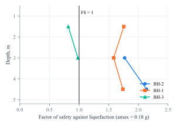
In BH-3 the loose silty sand at 1.5 m (FS = 0.82) and the poorly graded sand at 3.0 m (FS = 0.98) liquefy at the design acceleration; at 0.36 g every saturated sand on the site except BH-2 at 4.5 m (FS = 1.07) has FS < 1. The clay (PI = 20–22 %) and the very dense gravel are not susceptible. Liquefaction of the upper 4.4 m in BH-3, 25 m from the stream bank, also brings a risk of lateral spreading towards the stream.
Table 11. Single-pile capacity, Ø 0.5 m bored pile, 1.5 m socket into GW.
| Zone | Toe, m | Length, m | Qb, kN | ΣQs, kN | Downdrag Qneg, kN | Qu, kN | Q_safe (FS 2.5), kN |
|---|---|---|---|---|---|---|---|
| BH-2 | 11.1 | 9.6 | 1512 | 1020 | 0 | 2532 | 1013 |
| BH-1 | 12.1 | 10.6 | 1372 | 816 | 0 | 2188 | 875 |
| BH-3 | 12.7 | 11.2 | 1267 | 588 | 132 | 1855 | 742 |
In BH-3, shaft friction in the liquefiable SM and SP (132 kN per pile) is excluded and applied as downdrag, so the columns B6 and C6 need three piles. For C4 the moment of 391.5 kN·m would put 783 + 261 = 1044 kN on one pile of a pair, more than Qsafe = 875 kN, so four piles are used (522 kN each). Table 12 and Figure 10 give the final layout.
Table 12. Final pile layout.
| Columns | Zone | P, kN | Piles | Max pile load, kN | Q_safe, kN | Settlement, mm |
|---|---|---|---|---|---|---|
| A1, D1 | BH-2 | 702 | 2 | 351 | 1013 | 11.3 |
| A2, B1, C1, D2 | BH-2 | 1080 | 2 | 540 | 1013 | 11.9 |
| A3, A4, A5, D3, D4, D5 | BH-1 | 1080 | 2 | 540 | 875 | 12.1 |
| A6, B7, C7, D6 | BH-3 | 1080 | 2 | 672 | 742 | 12.8 |
| A7, D7 | BH-3 | 702 | 2 | 483 | 742 | 12.0 |
| B2, C2 | BH-2 | 1566 | 2 | 783 | 1013 | 12.8 |
| B3, B4, B5, C3, C5 | BH-1 | 1566 | 2 | 783 | 875 | 13.1 |
| B6, C6 | BH-3 | 1566 | 3 | 654 | 742 | 12.7 |
| C4 | BH-1 | 1566 | 4 | 522 | 875 | 11.5 |
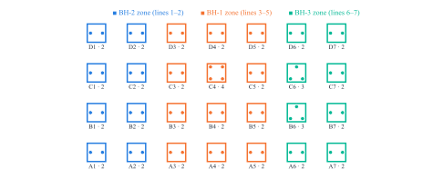
Table 13. Design checks on the final foundation (NOTE = item discussed in the text).
| Check | Value | Limit | Status |
|---|---|---|---|
| Pile capacity (governing A6: 2 piles Ø0.5 m × 11.2 m) | 671.9 kN per pile | ≤ Q_safe = 742 kN (FS 2.5; incl. moment and downdrag 131.9 kN) | PASS |
| Maximum total settlement | 13.1 mm | ≤ 50 mm | PASS |
| Differential settlement B4–C4 | 1.54 mm | ≤ 7.5 mm | PASS |
| Angular distortion B4–C4 | 0.00031 | ≤ 1/666 = 0.0015 | PASS |
| Footings fit the column grid | 2.3 m | ≤ spacing − 0.3 m = 4.7 m | PASS |
| Liquefaction BH-2 (piled) (at amax = Z = 0.36 g: liquefiable SM) | 1.77 min FS | ≥ 1.0 at amax = 0.18 g, Mw 7.5 | NOTE |
| Liquefaction BH-1 (piled) (at amax = Z = 0.36 g: liquefiable SM, SP) | 1.58 min FS | ≥ 1.0 at amax = 0.18 g, Mw 7.5 | NOTE |
| Liquefaction BH-3 (piled): SM 0.9–2.6 m, SP 2.6–4.4 m | 0.82 min FS | ≥ 1.0 at amax = 0.18 g, Mw 7.5 | NOTE |
| Isolated footings (tried first, incl. neighbouring-footing stress) | 114.3 mm | ≤ 50 mm — not met → piles under every column | NOTE |
| Alternative foundation: piles in BH-2, BH-1, BH-3 | 28 of 28 columns | isolated footings infeasible there | NOTE |
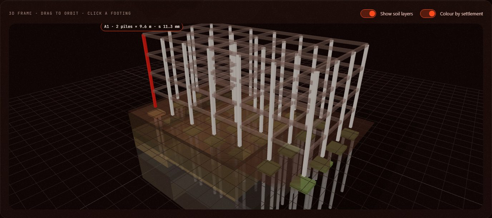
A mixed scheme — footings on lines 1–5 and piles on lines 6–7 with a movement joint — was considered first; with footings analysed one at a time it appeared to work. Once the interaction of neighbouring footings in the clay is included, footings settle up to 114 mm, so the mixed scheme fails even before the joint is considered; across a joint the footing and pile blocks would differ by about 100 mm. Bored piles to the gravel under every column bypass the compressible clay, the liquefiable sands and the seasonally saturated zone, give one foundation type for the whole frame (no joint is needed) and limit settlement to 13.1 mm with a maximum differential of 1.54 mm.
Piles through the liquefiable sands are designed with no shaft resistance in those layers and with downdrag; the pile caps should be tied in both directions by grade beams, and the piles reinforced for the lateral loads and the kinematic bending that a liquefied layer imposes (structural design is outside this report). On the stream side, bank protection and a drainage measure behind the east wall are recommended to limit scour and seepage. Concrete is M30 with 50 mm cover (severe exposure).
The load and moment of C4, amax = Z/2 and Mw = 7.5, the modulus correlation E = 500(N + 15), the fill properties, and K, α and the D/100 rule for the piles are assumptions and are listed in the application’s assumptions table. Clause references are to be confirmed against the code texts. Pile capacity should be confirmed by an initial load test (IS 2911 Part 4). The structural design of piles, caps and grade beams is not included.
Every module was checked against hand calculations, and the engine’s results for SPT corrections, direct shear, bearing capacity, stress increase and the degree of consolidation were compared with an independent implementation written earlier by the group (agreement within 0.5 %). AI coding tools were used to write parts of the software; the methods, parameters, design decisions and checks are the group’s, and the errors found in AI output and their corrections are documented in a separate engineering audit.
GeoFound (https://geofound.vercel.app) takes the site data (project, loads, boreholes, laboratory sheets; manual entry, CSV or JSON), and produces the ground model, every calculation step with its source, the foundation design and a summary with the checks and assumptions. Source code, 59 automated tests and the hand calculations used as benchmarks are in the group repository (github.com/ParashSharma11/CE-402-Assignment-Group8, branch geofound).
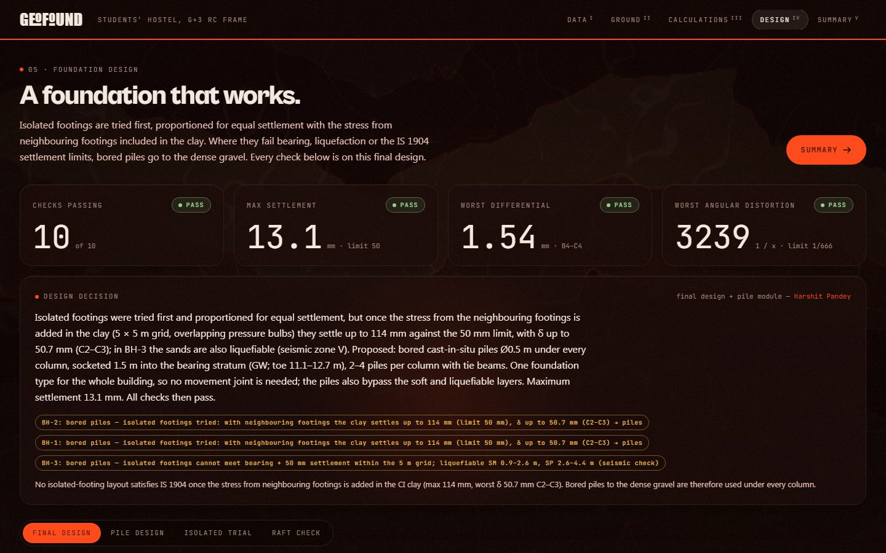
Harshit Pandey: GeoFound application (UI/UX and front-end), final foundation design and IS 1904 checks, pile design, liquefaction module, oedometer and UU interpretation, integration and deployment. Parash Sharma: soil profile (P1) and SPT / direct-shear (P2) engines and the first platform. Gaurav Dtyal: IS 6403 bearing-capacity engine (P3). Namit Mehta: stress-increase module (P4). Muvan: settlement engine (P5).